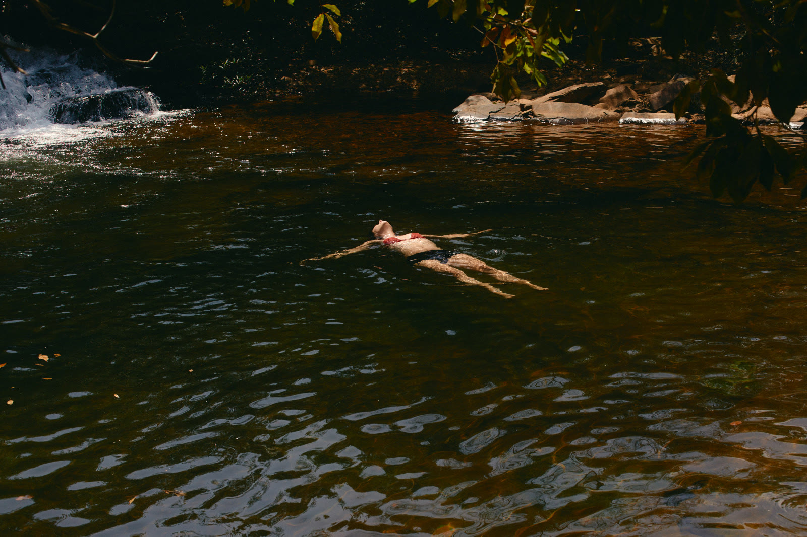
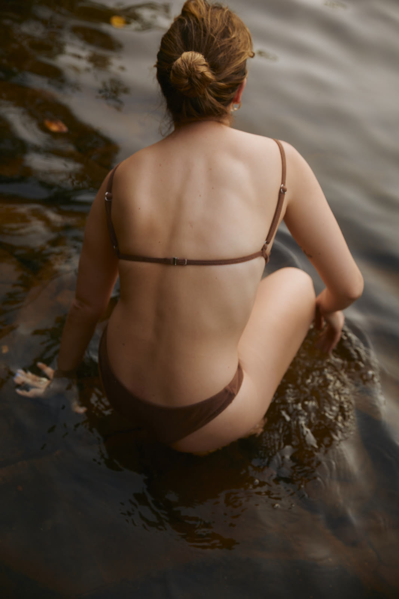
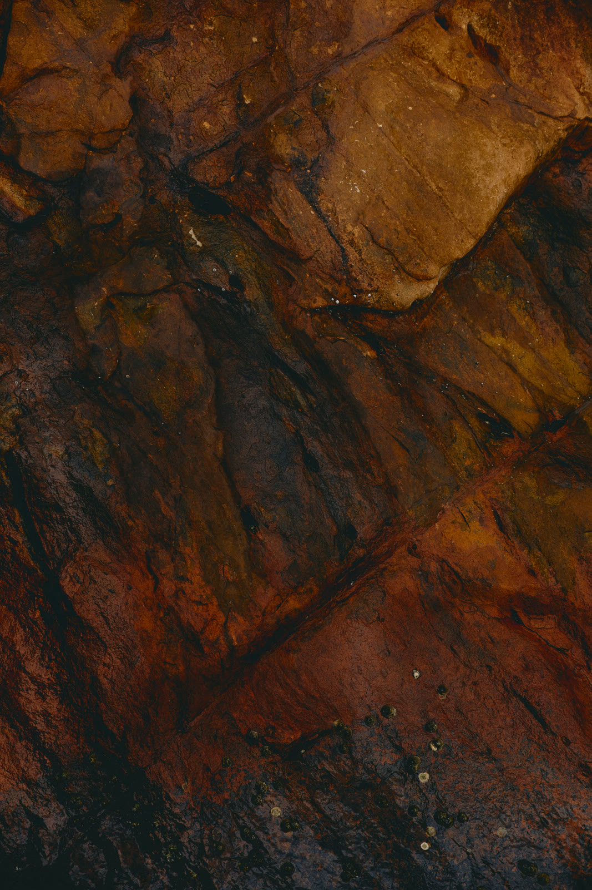
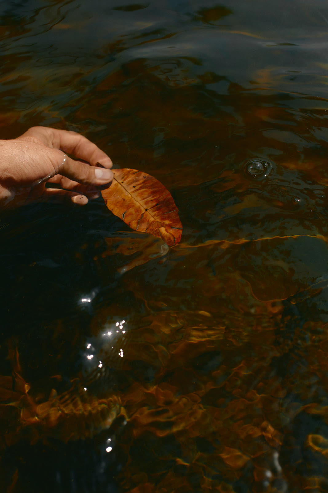

Other Bodies
Feelings rarely stay put. Each story follows ten feelings from the deck through a process in the natural world, and lets each one change gradually into the next. Step through at your own pace and stay as long as you like, or let it play: some states pass quickly, and some stay a long time.
They show a feeling as part of a passage, not a place you’re stuck. They aren’t predictions of where yours will go.

a seed committing to one direction in the dark
still → numb → the ache of not yet → uncertain → afraid → overwhelmed → vulnerable → curious → hopeful → alive
the shore, always leaving, always returning
love → longing → withdrawn → lonely → numb → still → longing → tender → belonging → love
water on stone, over time
guarded → afraid → lonely → angry → exhausted → grief → ambivalent → forgiving → trusting → repaired
a forest moving through its stages
grief → exhausted → hopeful → proud → ambivalent → regret → forgiving → belonging → changed → still
metamorphosis
afraid → guarded → uncertain → overwhelmed → numb → changed → the ache of not yet → curious → vulnerable → alive



Other Bodies is a creative health practice, not therapy. Nothing here is a treatment, an assessment, or clinical advice. If you are in distress, please reach someone who can help now: in British Columbia, 310-6789 (no area code); anywhere in Canada, call or text 9-8-8.